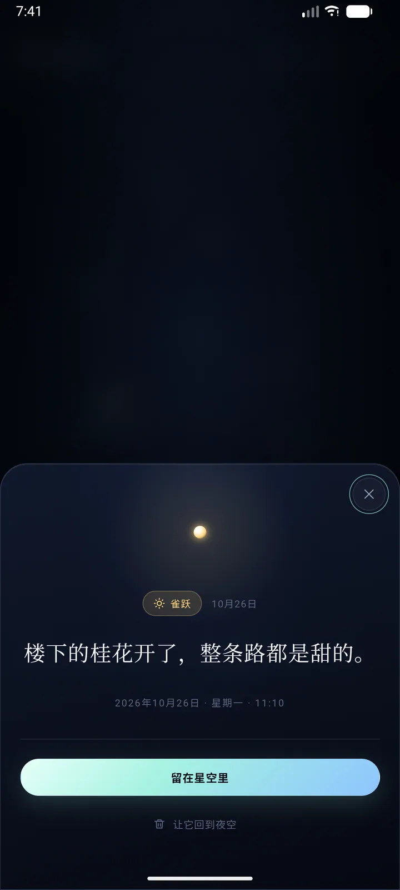
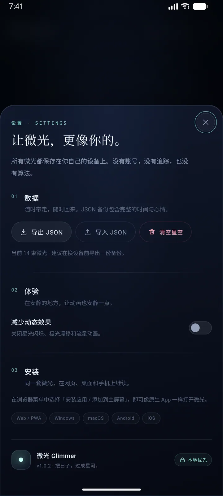

一句话就够
没有标题、分类和标签。写下此刻，点亮就好。
不是日记，是微光
日记要求你完整地交代一天，
微光只收留一个瞬间。
一句话，一种心情，就够了。没有标题，没有分类，也没有必须填满的空白。
WHY GLIMMER
不需要坚持，也不需要整理。想起什么，就写一句。
没有标题、分类和标签。写下此刻，点亮就好。
没有账号、没有云端、没有追踪。数据只写进本地存储。
每条微光都是夜空里的一颗星，时间会把它们连成星座。
用一段星语码或一份 JSON，把整片星空迁移到另一台设备。
打开「减少动态效果」，星光与极光会停下来，界面不闪。
Windows、Android、macOS、Web，同一套微光，各自安放。
THE SKY
每一束微光落在夜空里，位置、颜色和连线都不一样。写得越多，星座越完整。

写下此刻，选一种心情，回车。剩下的交给夜空。
日期、时间与心情会一起保存，随时可以回来看看。
减少动态效果只暂停环境动画，不会影响任何内容。

DOWNLOAD
同一个版本，三个平台。也可以直接在浏览器里打开，不必安装。
最新版本 v1.0.2 2026年10月29日 全部版本
NSIS 安装包。未签名，若 SmartScreen 提示，请选择「更多信息 → 仍要运行」。
使用同一发布证书签名，可直接覆盖安装旧版本，数据会保留。
未签名版本。首次打开请右键 → 打开，或执行 xattr -cr "/Applications/微光.app"。
FAQ
只存在当前设备应用的本地存储里。微光没有账号系统，也没有云端数据库，不会把你的文字上传到任何服务器。
在「同频」里生成一段星语码，或复制分享链接，在新设备上粘贴即可合并；也可以在设置里导出 JSON，再导入到新设备。
可以。每次发布都使用同一张签名证书，新版本可以直接覆盖旧版本，数据不会丢失。如果之前装的是 Debug 版，需要先导出数据再卸载。
当前 DMG 没有使用 Apple 开发者证书签名。第一次打开时右键点击「微光」→「打开」，或执行 xattr -cr "/Applications/微光.app" 即可。
安装包未做代码签名，Windows SmartScreen 会给出提示。点击「更多信息」→「仍要运行」即可继续安装。
不需要。微光免费使用，不要求注册，也没有订阅。数据完全由你自己保管。